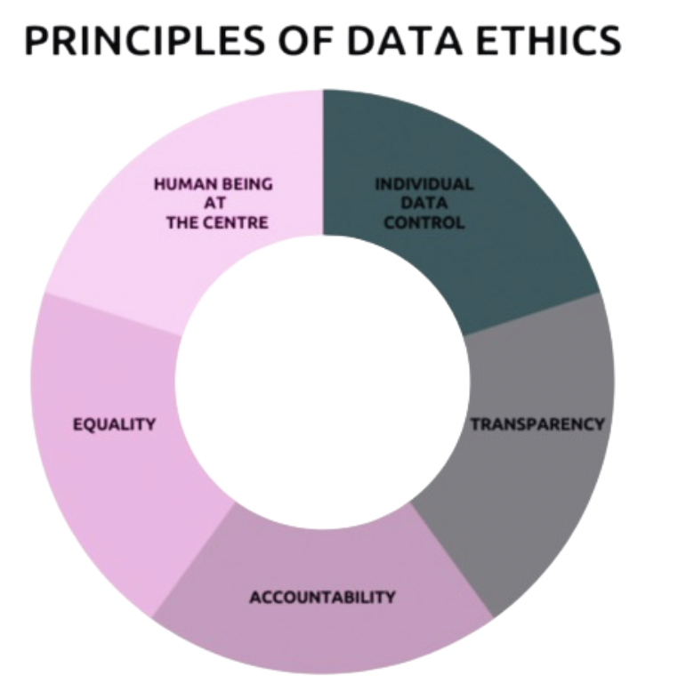

About the project
"Open Voices" is a Linked Open Data project aimed at analyzing the socio-cultural dynamics that influence violence against women in Italy. To approach this complex issue, we have established a few fundamental parameters:
- Year span: 2018, providing a focused and detailed analysis based on data from a single year to ensure consistency and clarity in interpreting the results.
- Gender: The analysis includes data on both women and men, as well as aggregated totals, to provide a comprehensive understanding of the phenomenon and examine differences and commonalities across genders.
- Victims: The analysis focuses on victims who turn to the national helpline 1522, with data on victims of violence categorized by geographic regions across Italy.
- Factors of interest: Opinions about gender roles, acceptability of intimate partner violence, causes of violence, and victim demographics.
This project allows for a deeper understanding of the patterns of violence across different regions of Italy and helps identify socio-cultural factors that contribute to the persistence of gender-based violence.
By integrating this open data, "Open Voices" aims to inform policies, raise awareness, and provide key insights to foster a more informed and empathetic societal response to gender-based violence.
To present these findings in a clear and accessible manner, different visualizations have been used to showcase the data.
RQ: Is there any observable pattern indicating a correlation between religious observance, pregnancy rates and education level in young women throughout Italy?
Find out the results!Scenario
The perception and occurrence of violence against women in Italy are shaped by demographic factors, including geographical location, which influence societal stereotypes and the acceptability of violence. A data-driven approach that integrates population statistics, societal attitudes, and reports of violence can pinpoint intervention opportunities to reduce violence and challenge harmful stereotypes.
This project aims to raise public awareness about violence against women, promote gender equality, and enhance support services for victims. The documentation is based on statistical data from ISTAT, the Ministry of Justice, and the Ministry of Security, with a particular focus on public opinions regarding gender roles and the utilization of the anti-violence hotline 1522.
This research explores the relationship between regional stereotypes, public perceptions, and the prevalence of sexual and domestic violence against women in Italy. It investigates how stereotypes about women and sexual violence differ across regions, reporting rates, and societal attitudes. The study also examines regional variations in awareness and education about consent, alongside socio-cultural factors that contribute to victim-blaming and the normalization of abusive behaviors in intimate relationships.
The final aim is to uncover patterns in the prevalence and reporting of violence, offering insights into the complex interaction between cultural norms and legal outcomes across Italy’s diverse regions.
RESEARCH QUESTIONS
- How do geographical and cultural factors across different regions of Italy influence attitudes toward sexual violence?
- What are the prevailing stereotypes about women and sexual violence across different regions in Italy, and how do these stereotypes influence public perception, legal responses, and the prevalence of violence?
- How does the level of awareness and education about consent and sexual violence vary across Italian regions, and what impact does this have on reporting rates?
- What socio-cultural factors contribute to victim-blaming and the normalization of abusive behaviors in intimate relationships in various geographical areas of Italy, and how do these factors shape public attitudes and response systems?
- To what extent do regional differences in gender roles and expectations influence the prevalence and reporting of domestic and sexual violence against women across Italy?
- Which territories exhibit the highest levels of gender stereotypes, and how do these correlate with data on sexual and domestic violence? Are there geographical areas where stereotypes persist despite lower reported rates of violence?
Results
Datasets, including source and mashup ones, used to support the investigative analysis
Total victims in the italian population during the year 2018 turning to 1522 anti-violence and stalking number
Female victims, in the italian population during the year 2018 turning to 1522 anti-violence and stalking number
Male victims, in the italian population during the year 2018 turning to 1522 anti-violence and stalking number
Source and mashup datasets
As mentioned, our project comprises the use of 9 different datasets, between source ones and mashup ones.
The 5 source datasets have been downloaded in .csv format from different databases belonging to Istat, the Italian National Institute of Statistics. Specifically, we have used three different databases:
To make our project as accessible as possible even in the future, we have preferred IstatData over I.Stat when doable.During the download phase, we have manually filtered out everything that was not of interest for our research, keeping only the data strictly related keeping only the data strictly related to our research question (we have, for example, discarded any information related to marital status in the datasets regarding population).
Still, the source datasets went through an additional clean up phase in which we discarded duplicate (e.g., columns with different names and values but referring to the same information) and irrelevant data and, when necessary, added missing "coded data" to allow for an easier management of the datasets.
Finally, we proceeded with the mashup phase,
creating the final three main mashup datasets used to answer our
research question. As with source and clean datasets, we distinguished between the
three years of our time span of interest: in this way, we ended up with 9 final mashup datasets
(three for
each
factor of interest).
The code for the clean up and mashup phases can be found in the appropriate documentation, freely downloadable.
- All
- Source datasets
- Mashup datasets
D1 - Population 2018
ID: D1
Provenience: I.Stat
Format: .csv
Metadata: Provided
URI: 2018Population
License: CC BY 3.0
D2 - Opinions about sexual violence
ID: D2
Provenience: IstatData
Format: .csv
Metadata: Provided
URI: OpinionsViolenceGeoAreas
License: CC BY 3.0
D3 - Acceptability of intimate partner violence
ID: D3
Provenience: IstatData
Format: .csv
Metadata: Provided
URI: OpinionsPartnerGeoAreas
License: CC BY 3.0
D5 - Indication of some causes of intimate partner violence
ID: D5
Provenience: I.Stat
Format: .csv
Metadata: Provided
URI: ViolenceCauses
License: CC BY 3.0
Analyses
The 7 source datasets have been analysed for four aspects.

Quality analysis
In alignment with the National Guidelines for Enhancing Public Information Assets, we evaluated data quality based on four key factors: accuracy, completeness, coherence, and timeliness.

Legal Analysis
The legal analysis aims to evaluate potential risks and imbalances related to the long-term sustainability of data generation and dissemination, focusing on areas such as privacy, intellectual property rights, licensing for release, restrictions on public access, economic factors, and other temporal considerations.
Ethical Analysis
Assessing the datasets through the lens of the Data Ethics Principles and Guidelines, focusing on human-centered approaches, transparency, responsibility, and safeguarding individual data.

Technical Analysis
This section examines the metadata provided by Istat and other relevant information about the datasets, including format, provenance, and Internationalized Resource Identifiers (IRI). Additionally, it involves creating RDF assertions and metadata for the mashup datasets, along with an evaluation of the project’s alignment with the FAIR principles.
Quality analysis
In line with the
National
Guidelines ("Linee guida nazionali per la valorizzazione del patrimonio informativo
pubblico"), developed under the Data & Analytics
Framework project by AgID and the Digital Transformation Team, we conducted a thorough quality assessment of our datasets to ensure their reliability and suitability for their intended purposes.
Specifically, there are four main factors to look for when analysing data quality:
The results of this analysis are summarized in a table highlighting the overall quality of each dataset and identifying any areas requiring improvement.
| ID Dataset | Accuracy | Coherence | Completeness | Timeliness |
|---|---|---|---|---|
| D1 - Population 2018 | ||||
| D2 - Opinions about sexual violence | ||||
| D3 - Acceptability of intimate partner violence | ||||
| D4 - Victims turning to 1522 | * | |||
| D5 - Indication of some causes of intimate partner violence |
The same method was used to estimate missing values of male and female victims for Trentino and male victims in Basilicata, comparing them with the rate of Molise, another region with similar demographic characteristics.
Victim rate formula (by region):
𝑉𝑖𝑐𝑡𝑖𝑚𝑠 𝑟𝑎𝑡𝑒 (𝑝𝑒𝑟 𝑟𝑒𝑔𝑖𝑜𝑛) = 𝑉𝑖𝑐𝑡𝑖𝑚𝑠 𝑉𝑎𝑙𝑢𝑒 ÷ 𝑃𝑜𝑝𝑢𝑙𝑎𝑡𝑖𝑜𝑛 𝑣𝑎𝑙𝑢𝑒
Formula for estimating missing values:
𝑀𝑖𝑠𝑠𝑖𝑛𝑔 𝑣𝑖𝑐𝑡𝑖𝑚𝑠 𝑣𝑎𝑙𝑢𝑒 𝑒𝑠𝑡𝑖𝑚𝑎𝑡𝑖𝑜𝑛 = 𝑣𝑖𝑐𝑡𝑖𝑚𝑠 𝑟𝑎𝑡𝑒 × 𝑝𝑜𝑝𝑢𝑙𝑎𝑡𝑖𝑜𝑛 𝑣𝑎𝑙𝑢𝑒 (𝑜𝑓 𝑟𝑒𝑔𝑖𝑜𝑛 𝑤𝑖𝑡ℎ 𝑚𝑖𝑠𝑠𝑖𝑛𝑔 𝑑𝑎𝑡𝑎)
Legal analysis
The legal analysis of the source datasets is essential to ensure the long-term sustainability of the production process and of the publication of datasets and to guarantee a of both the data production process and the publication of datasets, while also guaranteeing a balanced service that aligns with public responsibilities and respects individual rights.
This analysis was carried out using a reference checklist consisting of a series of binary questions regarding the topics of: privacy issues, IPR policy, licenses, limitations on public access, economical conditions, and temporal aspects.
| To check: | D1 | D2 | D3 | D4 | D5 |
|---|---|---|---|---|---|
| Is the dataset free of any personal data as defined in the Regulation (EU) 2016/679? | |||||
| Is the dataset free of any indirect personal data that could be used for identifying the natural person? | |||||
| Is the dataset free of any particular personal data (art. 9 GDPR)? | |||||
| Is the dataset free of any information that combined with common data available in the web, could identify the person? | |||||
| Is the dataset free of any information related to human rights (e.g., refugees, witness protection, etc.) | |||||
| Did you use a tool for calculating the range of the risk of deanonymization? | Not needed | Not needed | Not needed | Not needed | Not needed |
| Are you using geolocalization capabilities? | |||||
| Did you check that the open data platform respect all the privacy regulations (registration of the end-user, profiling, cookies, analytics, etc.)? | |||||
| Do you know who, in your open data platform, is the Controller and Processor of the privacy data of the system? | |||||
| Have you checked the privacy regulation of the country where the dataset are physically stored? | |||||
| Do you have non-personal data? |
| To check: | D1 | D2 | D3 | D4 | D5 |
|---|---|---|---|---|---|
| Have you created and generated the dataset? | |||||
| Are you the owner of the dataset? | |||||
| Are you sure not to use third party data without the proper authorization and license? | |||||
| Have you checked if there are any limitations in your national legal system for releasing some kind of datasets with open license? |
| To check: | D1 | D2 | D3 | D4 | D5 |
|---|---|---|---|---|---|
| Did you release the dataset with an open data license? | |||||
| Did you include the clause: "In any case the dataset can't be used for re-identifying the person"? | |||||
| Did you release the API (in case you have it) with an open source license? | |||||
| Have you checked that the open data/API platform license regime is in compliance with your IPR policy? |
| To check: | D1 | D2 | D3 | D4 | D5 |
|---|---|---|---|---|---|
| Did you check that the dataset concerns your institutional competences, scope and finality? | |||||
| Did you check the limitations for the publication stated by your national legislation or by the EU directives? | |||||
| Did you check if there are some limitations connected to the international relations, public security or national defence? | |||||
| Did you check if there are some limitations concerning the public interest? | |||||
| Did you check the international law limitations? | |||||
| Did you check the INSPIRE law limitations for the spatial data? |
| To check: | D1 | D2 | D3 | D4 | D5 |
|---|---|---|---|---|---|
| Did you check that the dataset could be released for free? | |||||
| Did you check if there are some agreements with some other partners in order to release the dataset with a reasonable price? | Not needed | Not needed | Not needed | Not needed | Not needed |
| Did you check if the open data platform terms of service include a clause of “non liability agreement” regarding the dataset and API provided? | |||||
| In case you decide to release the dataset to a reasonable price did you check if the limitation imposed by the new directive 2019/1024/EU are respected? | Not needed | Not needed | Not needed | Not needed | Not needed |
| In case you decide to release the dataset to a reasonable price did you check the e-Commerce directive and regulation? | Not needed | Not needed | Not needed | Not needed | Not needed |
| To check: | D1 | D2 | D3 | D4 | D5 |
|---|---|---|---|---|---|
| Do you have a temporary policy for updating the dataset? | |||||
| Do you have some mechanism for informing the end-user that the dataset is updated at a given time to avoid mis-usage and so potential risk of damage? | |||||
| Did you check if the dataset for some reason cannot be indexed by the research engines (e.g., Google, Yahoo, etc.)? | |||||
| In case of personal data, do you have a reasonable technical mechanism for collecting request of deletion (e.g., right to be forgotten)? | Not needed | Not needed | Not needed | Not needed | Not needed |
Publication license
A key aspect of the legal analysis is determining the appropriate publication license for the newly created mashup datasets. This decision must align with the licenses of the source datasets, which in our case, were all released under the
CC BY 3.0.
To guide this process, we utilized the Licensing Assistant tool provided by the European Commission. After evaluating the options, we opted to publish all nine mashup datasets under the CC BY 4.0
license.
The table below summarizes the original licenses of the source datasets and the final publication license applied to the mashup datasets:
| ID | Dataset | Original licenses | Final license |
|---|---|---|---|
| MD6 | Victims causes indication | CC BY 3.0, CC BY 3.0, CC BY 3.0 | CC BY 4.0 |
| MD7 | Geographical Distribution of Female Victims | CC BY 3.0, CC BY 3.0, CC BY 3.0 | CC BY 4.0 |
| MD8 | Geographical Distribution of Males Victims | CC BY 3.0, CC BY 3.0, CC BY 3.0 | CC BY 4.0 |
| MD9 | Geographical Distribution of Total Victims | CC BY 3.0, CC BY 3.0, CC BY 3.0 | CC BY 4.0 |
Ethical analysis

For the ethical analysis of our project’s data, we applied the Data Ethics Principles and
Guidelines and the Odi Project's detailed framework for assessing the ethical aspects of our data processing.
Both the source and mashup datasets for our project are exclusively derived from the Italian National Institute of Statistics (ISTAT). Therefore, we first focused on evaluating the fairness of ISTAT's data collection and management practices. Following that, we established clear ethical guidelines to ensure responsible handling of the datasets throughout our project's lifecycle.
Data Ethics Principles
-
The "Open Voices" project aims to analyse the socio-cultural dynamics that influence violence against women in Italy, therefore the ethical approach in data management is fundamental to ensure that the rights of victims are respected, that no stereotypes or discrimination are fostered, and that the analysis contributes positively to raising awareness on such a sensitive issue.
Human being at the center: ISTAT’s policy is deeply aligned with both ethical standards and legislative principles. The organization prioritizes the dissemination of statistical information to promote awareness of Italy’s social and economic conditions. It also strives to enhance public decision-making by providing clear, accessible statistical data. In addition, ISTAT conducts research to continually refine statistical methodologies and improve Italy's statistical literacy. - Equality: In the context of the "Open Voices" project, the main objective is to analyze the socio-cultural dynamics that influence violence against women in Italy, Therefore, the collection of data concerns very sensitive issues such as gender violence and its perception within society. ISTAT data on key equality issues, such as gender discrimination and domestic violence.
- Transparency: ISTAT ensures transparency in data management by providing comprehensive documentation. This documentation covers the data collection methods, clarifies the use of specific terms and definitions, and outlines policies and licenses that safeguard against misinterpretation of the data.
- Accountability: ISTAT's quality assurance procedures align with European frameworks, specifically the European Statistics Code of Practice. This adherence strengthens both accountability and governance within the national statistical system and aligns it with European standards.
- Individual data protection: ISTAT ensures that its datasets are anonymized in compliance with legal requirements. The organization’s practices adhere to strict confidentiality standards, ensuring that the privacy of respondents is always respected. Their approach to handling sensitive data complies with European data protection laws (e.g., Regulation (EU) 2016/679 and Legislative Decree No. 322/1989).
Ethical concerns and their management
Although ISTAT adheres to ethical principles in data collection and management, the team has paid particular attention to the ethical management of source information, given the great sensitivity of the content dealt with in our project, which concerns gender-based violence. Data on sexual violence, the acceptability of partner violence and access to support services (such as 1522) are sensitive issues and ethical concerns in their treatment have been addressed in the following ways:
- Data Integrity and Privacy: To ensure data integrity and privacy, the values from the source datasets were aggregated and presented as percentages, avoiding any correlation with real individuals.
- Protection of Vulnerable Groups: Certain sensitive data were intentionally omitted to avoid the risk of discriminatory behavior. The project aimed to protect women experiencing violence, minimizing the risk of stigmatization.
- Avoiding Generalizations and Misinterpretations: The objective of the project was to identify potential patterns in the dynamics of gender-based violence, not to make inferences or generalizations. In our results and conclusions documentation, we emphasize that any observed patterns in the data should not be generalized due to inconsistencies in the data and the absence of other potentially relevant socio-economic factors.
- All relevant documentation regarding the data processing for the creation of mashup datasets and visualizations is provided in our GitHub repository.
Technical analysis
Source datasets
All source datasets have been assessed following the metadata model established by AGID, , which categorizes metadata quality into four levels. This classification is based on two key factors: the strength of the data-metadata relationship and the level of detail provided.
Note: Further details and reconstructed metadata for the source datasets are available in the metadata analysis table below.
| ID | Provenience | Format | Metadata | URI | License |
|---|---|---|---|---|---|
| D1 | I.Stat | .csv | Level 4: An SDMX structured file is downloadable with a strong data-metadata bond and a datum-level detail of description. They are machine readable. | 2018Population | CC BY 3.0 |
| D2 | IstatData | .csv | Level 4: An SDMX-structured file is available for download, featuring a strong connection between data and metadata, with detailed descriptions at the datum level. These files are machine-readable.
Level 2: Additional metadata, offering clear information about sources and methodologies, is provided on a separate webpage, accessible via a sidebar menu. |
OpinionsViolenceGeoAreas | CC BY 3.0 |
| D3 | IstatData | .csv | Level 4: An SDMX-structured file is available for download, featuring a strong connection between data and metadata, with detailed descriptions at the datum level. These files are machine-readable.
Level 2: Additional metadata, offering clear information about sources and methodologies, is provided on a separate webpage, accessible via a sidebar menu. >webpage, accessible through a sidebar menu |
OpinionsPartnerGeoAreas | CC BY 3.0 |
| D4 | I.Stat | .csv | Level 4: An SDMX structured file is downloadable with a strong data-metadata bond and a datum-level detail of description. They are machine readable. | Victims | CC BY 3.0 |
| D5 | I.Stat | .csv | Level 4: An SDMX structured file is downloadable with a strong data-metadata bond and a datum-level detail of description. They are machine readable. >webpage, accessible through a sidebar menu | ViolenceCauses | CC BY 3.0 |
RDF Metadata Assertion of the Datasets
All generated mashup datasets have been meticulously documented using metadata, adhering to the guidelines outlined in the DCAT-AP_IT standard. This choice aligns with the Italian Agency for Digitalization (AGID) directives for the valorization of public information heritage.
Given that these datasets represent data of significant national interest and are derived from Istat, an Italian public research institution, the adoption of DCAT-AP_IT (2016), was deemed most appropriate.
Although this national standard is based on the earlier DCAT v1.0 and introduces stricter constraints
compared to the more flexible
DCAT-AP 2.0,
it was chosen because an increasing number of Italian
Public Administrations are aligning with DCAT-AP_IT, ensuring better compatibility within the national ecosystem.
Furthermore, adhering to DCAT-AP_IT allows our datasets to align with detailed national guidelines, thereby facilitating seamless
interoperability and harmonization
with other public data resources in Italy.
Semantic Enrichment of Datasets
The metadata for the source datasets were primarily derived from the original data sources. When metadata was incomplete or unavailable, additional information was inferred and supplemented following the same principles applied to the mashup datasets. For instance, themes were assigned to source datasets based on recognized European Authority standards. To enhance the semantic description of datasets, we have utilized several key ontologies, including DCAT, DCTERMS, PROV, FOAF, ADMS, SKOS, CC, and DCAT-AP IT. These ontologies provide a structured framework for describing datasets and their metadata, ensuring interoperability and adherence to Linked Open Data (LOD) standards. This approach facilitates the discoverability, understandability, and reuse of datasets across diverse contexts.
The DCAT (Data Catalog Vocabulary) ontology plays a central role, serving to describe datasets and data catalogs and publish them on the Web. Key properties such as dcat:dataset, associate datasets with a catalog, while dcat:theme categorizes datasets by their topics, and dcat:distribution specifies the available data formats. For example, datasets can be linked to themes like population statistics or societal issues using dcat:theme. Learn more about DCAT Version 3 at W3C DCAT.
DCTERMS (Dublin Core Terms) is used to describe general metadata, including dcterms:title for dataset titles and descriptions, and dcterms:accessRights to indicate accessibility. This inclusion ensures the use of a widely recognized standard for metadata description. More information about DCTERMS can be found at Dublin Core Terms.
ADMS (Asset Description Metadata Schema) is included to complement DCAT by describing assets like datasets and services, particularly in government and public administration contexts. ADMS plays an important role in the asset management landscape. For further details, consult the ADMS Specification.
CC (Creative Commons) provides a vocabulary for licensing datasets, such as cc:license, ensuring clear and standardized license attribution. Visit Creative Commons specifications for further insights.
Finally, DCAT-AP IT (DCAT Application Profile for Italy) is referenced through dcatapit: to align with Italian government open data standards. It extends DCAT to meet specific national requirements. For more information, check out DCAT-AP IT.
FAIR principles
During the project development, we aimed to align our efforts with the FAIR principles established by the GO FAIR Initiative.
These principles, developed by a consortium of scientists and organizations, provide guidelines to ensure digital assets are
Findability, Accessibility, Interoperability, Reusability, with a strong emphasis on machine-actionability.
The table below utilizes the FAIR Principles overview from GO FAIR as a checklist to systematically evaluate our project’s adherence to these guidelines.
| To check: | |
|---|---|
| (Meta)data are assigned a globally unique and persistent identifier | |
| Data are described with rich metadata (defined by R1 below) | |
| Metadata clearly and explicitly include the identifier of the data they describe | |
| (Meta)data are registered or indexed in a searchable resource |
| To check: | |
|---|---|
| (Meta)data are retrievable by their identifier using a standardised communications protocol | |
| The communication protocol is open, free, and universally implementable | |
| The communication protocol allows for an authentication and authorisation procedure, where necessary | |
| Metadata are accessible, even when the data are no longer available |
| To check: | |
|---|---|
| (Meta)data use a formal, accessible, shared, and broadly applicable language for knowledge representation. | |
| (Meta)data use vocabularies that follow FAIR principles | |
| (Meta)data include qualified references to other (meta)data |
| To check: | |
|---|---|
| (Meta)data are richly described with a plurality of accurate and relevant attributes | |
| (Meta)data are released with a clear and accessible data usage license | |
| (Meta)data are associated with detailed provenance | |
| (Meta)data meet domain-relevant community standards |
Preprocessing of data
The source datasets were processed using KNIME software, a powerful platform for data analytics and workflow automation. Various operations were carried out to clean, preprocess, and mash up the data, ensuring that it was structured and ready for analysis.
These operations included data cleansing steps such as handling missing values, standardizing formats, and removing duplicates, as well as combining multiple data sources to create the mashup dataset. The entire workflow, which outlines each step of the data transformation process, is available for download here, providing full transparency and enabling replication of the analysis.
The entire workflow, which outlines each step of the data transformation process, is available for consultaion in the image above, providing full transparency and enabling replication of the analysis.
Additionally, the KNIME workflow is available for download here, allowing users to access the cleaned and integrated data for their own analysis or research purposes.
Visualizations
Bar Chart
The bar chart visualization was included as well, since it offers us an immediate and clear comparison between values of each of our variables.
This section presents datasets on opinions about gender roles and violence against women among adults in Italy, based on the 2018 survey on gender role stereotypes and the social image of violence. The survey, conducted by Istat in partnership with the Equal Opportunities Department, explores cultural models and factors influencing attitudes toward violence. It examines the spread of gender stereotypes, acceptability of violence, its causes, and attitudes toward sexual violence. the spread of gender stereotypes (D2), acceptability of violence (D3), its causes ,(D5) and attitudes toward sexual violence.
The visualizations have been developed using a variety of libraries like plotly.js (for the bar charts).
The data has been processed further to build the different visualizations.
Opinions about sexual violence
This section explores the views of Italian adults on gender roles and sexual violence, broken down by region. The bar graph shows the degree of agreement with various stereotypes. The data show how different regions of Italy respond to these beliefs, highlighting cultural and social variations in perceptions of violence against women.
Controls
Results: Regional differences in perceptions of sexual violence in Italy are evident. This thesis highlights the wide regional differences in perceptions of sexual violence in Italy. Northern regions, such as Tuscany and Lombardy, show a greater awareness and strong disagreement about misconceptions about sexual violence, as the idea that women can provoke violence with their clothing or that violence within marriage is not considered to be such.
Acceptability of intimate partner violence
This section examines the acceptability of intimate partner violence in different regions of Italy. The bar graph shows the acceptability of various violent behaviors. The data shows the percentage of people who consider these behaviors acceptable or not, broken down by region, contributing to an understanding of cultural differences in opinion about domestic violence.
Controls
Results: In contrast, in regions such as Calabria, Puglia or Liguria, more permissive and stereotyped views persist, with significant percentages of people justifying or minimizing sexual violence. These findings suggest the importance of targeted educational interventions to raise public awareness and reduce the gap in regional perceptions, in order to promote a culture of respect and awareness about gender violence. The differences between regions indicate a significant variation in the perception of acceptability of violence. Regions such as Lazio, Sardinia and Piedmont show a clear opposition to couple violence, while in regions like Abruzzo and Basilicata there are still worrying margins of tolerance. In some regions, conditional or partial acceptance of these behaviors suggests that gender stereotypes and cultural norms permissive towards control or violence may persist.
Indication of some causes of intimate partner violence
This section explores the perceived causes of violence in intimate relationships in different regions of Italy. The data show how often each factor is identified as a cause of violence, contributing to a deeper understanding of the cultural and social roots of this phenomenon.
Controls
Results: The data show a marked regional disparity in the factors associated with gender-based violence in Italy. Regions such as Friuli Venezia Giulia and Emilia Romagna emerge with the highest rates in several categories, such as women’s perception as property and the need for superiority towards their partners, indicating a persistent rooting of gender stereotypes. Factors such as drug or alcohol abuse, prevalent in Sardinia, and childhood experiences of domestic violence, widespread in Basilicata, underline the importance of addressing the root causes of violence, including addiction and intergenerational transmission. Although some regions, such as Piedmont and Sardinia, show a clear opposition to violence, the presence of tolerant attitudes in other areas highlights the need for targeted interventions. Finally, it is crucial to promote cultural change through educational campaigns, strengthen psychological support and intervene on addictions to reduce regional disparities and prevent gender violence in a sustainable and effective way.
choropleth maps
In the map showing the distribution of victims of violence by geographical area, the analysis focuses on the geographic distribution of victims of violence, measured as the rate of victims per 100,000 inhabitants.
The k-means algorithm has divided the different areas into three clusters, based on the death rate:
- - Cluster a basso tasso (0-11%)
- - Cluster a medio tasso (12-16%)
- - Cluster ad alto tasso (17% e oltre)
Victims of violence by geographical areas
Bubble chart
The chart compares various causes of violence across Italian territories, revealing significant regional differences. Key causes such as "considering women to be property" and "abuse of drugs or alcohol" show strong correlations with higher victimization rates, especially in regions like Lombardia and Friuli-Venezia Giulia. Causes like "religious reasons" have a lower impact, while societal factors like the need for men to feel superior to their partners remain consistent across many areas. The analysis highlights the complex regional patterns of violence, emphasizing the need for targeted interventions based on specific territorial dynamics.
conclusions
For example, we could hypothesize that the early leavers rate is indeed affected by the early pregnancy rates, since being pregnant could be a reason for a young woman to choose to leave education or training. To affirm this, however, we would need to look into other possible correlated factors, such as poverty rates, to make sure they are not strongly affecting our data.
For the same reason, we can't possibly infer causality between religious rates and our other variables: even though they do seem to vary together, there's no mean for us to tell whether religiosity is the reason one is inclined to leave education and start a family early in life, or whether, after this happens, people are inclined to move their sociality from educational contests to religious contests. Just to give some examples of possible reasons of correlation.
Furthermore, to properly assess the connection between religiosity and pregnancies, with specific differentiation amongst induced abortions and live births, for instance, we would need much more data about how religiosity affects women's access to Voluntary Termination of Pregnancy (VTP, in Italian "Interruzione Volontaria di Gravidanza", IVG) in the first place. As we know, Italy has a very high rate of coscientious objectors (in 2012: 69,6% of gynecologists, 47,5% of anesthetists and 45% of non medical staff [source]).
This could significantly affect the pregnancy rates per region, as they have been counted including abortions in the place where they happen and not according to the woman's residency. It goes without saying, if a region prevents a woman to access VTP they might be likely to migrate to other region, hence, this phenomenon might also have affected our data. Unfortunately, there are very few and non-institutional data about the phenomenon and this prevented us to futherly investigate the degree of its impact on our study.
Finally, to highlight other features related to our variables and illustrate trends and other interesting information, you can have a look at our in the "Additional Visualizations" section. There, we provided:
- bubble charts for every year to investigate and better visualize how much our variables are correlated together,
- pie charts for pregnancies data, in order to better understand the rates of the different outcomes of pregnancies,
- time series for each reason, in order to better investigate how our values changed over the three year span we analyzed.
Overall, our research has provided many insightful results. Regarding the
relationship
between religious observance with pregnancies and early leavers of education, the data highlights the
presence
of relations in some regions, but is in some cases too inconsistent for establishing fair patterns.
The strongest correlation can be observed between a region's pregnancies and early
leavers of education in the female population, which are parameters that are often linked but should be
subject
to further research.
As stated previously, we must consider that even in instances of higher correlations between our observed parameters, we should be careful in our assumptions for two reasons:
- Firstly, given the absence of appropriate data and the limitations of this project's research, some significant socioeconomic parameters, which could provide more context regarding the situation of italian regions, as well individual cases, were not taken into account.
- Secondly, the presence of outliers in many of our data discourages us to make generalizations, but would be definitely interesting for further research.
Sustainability of the project
The source datasets used for this project are provided exclusively by the Italian National Institute of Statistics (Istat), which maintains them in its various databases. However, due to the ongoing transition of Istat's content to IstatData, the URIs provided in this project may eventually become obsolete.
Open Voices is the final project developed for the Open Access and Digital Ethics course (a.y. 2024/2025) within the Digital Humanities and Digital Knowledge Master's Degree (University of Bologna). As such, it is not actively maintained and will not be updated in the future.
Team & Statement of responsibility
Lucrezia Pograri
Project ideation — Data retrieval — KNIME preprocessing — Mashup datasets — Visualizations — RDF metadata assertion — Website development
Chiara Martina
Project ideation — Data retrieval — KNIME preprocessing — Mashup datasets — Analyses — Visualizations — Website development
Licenses and credits
Images and icons
All the icons are taken from ICONS8. They are available for unrestricted commercial and noncommercial use without permission or fee (CC0)
Web template
This website is built on the HTML5 template "Vesperr" by BootstrapMade and released under MIT
Source Datasets
Creative Commons Attribution 3.0 Unported (CC BY 3.0)
Mashup Datasets
Creative Commons Attribution 4.0 International (CC BY 4.0)
Softwares used
Leaflet: Copyright (c) 2010-2023, Volodymyr Agafonkin Copyright (c) 2010-2011, CloudMade - All rights reserved (BSD 2-Clause "Simplified" License)
Plotly.js: Copyright (c) 2021 Plotly, Inc - All rights reserved (MIT License)
KNIME: Copyright (c) 2007 Free Software Foundation, Inc. (General Public License (GPL), Version 3)